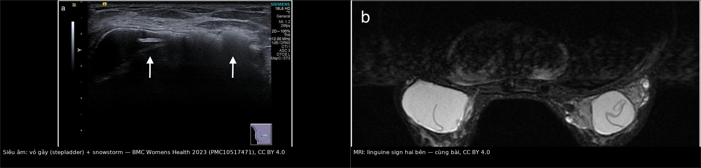
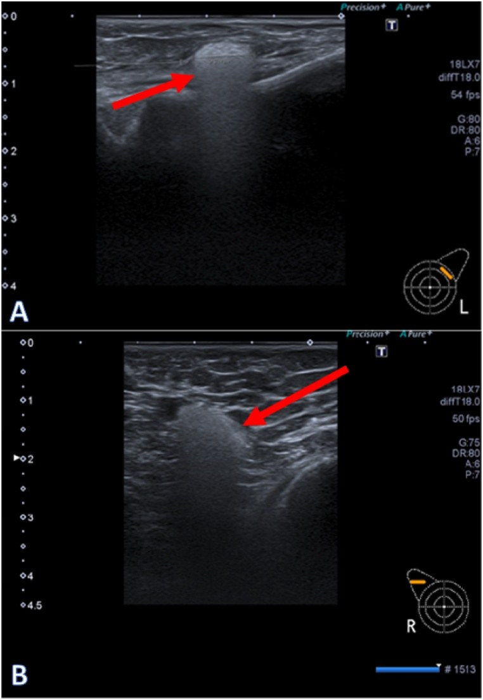
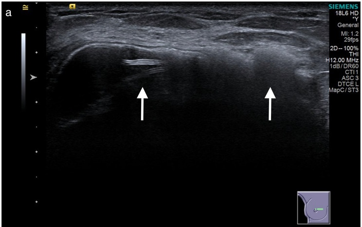
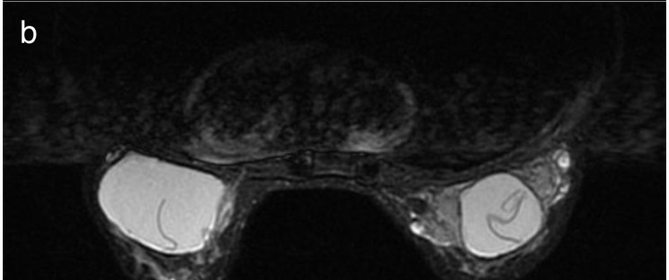
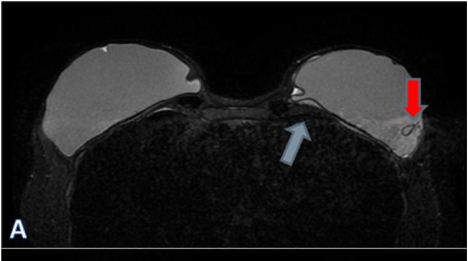

1656 — Rách vỏ implant ngực & rò gel (gel bleed) / Silicone breast implant rupture and gel bleed
Tags: pattern:rach-vo-implant pattern:linguine pattern:snowstorm vung:vu protocol:MRI-vu protocol:sieu-am-vu incidentaloma:vo-implant score:Baker
Mức chắc chắn (certainty): tổng hợp y văn (literature synthesis) — biên từ 3 bài toàn văn mở: ca nguyên văn implant 40 năm có cả siêu âm và MRI (Wu HH và cs, BMC Geriatr 2023, PMC10517471, CC BY 4.0), nghiên cứu đối chiếu siêu âm – MRI trên 205 implant (Spit KA và cs, Heliyon 2024, PMC11253520, CC BY 4.0), và loạt 111 implant rách có đối chiếu giải phẫu bệnh (Kim JH và cs, Medicina (Kaunas) 2024, PMC10890578, CC BY 4.0); nền protocol lấy từ tổng quan hình ảnh implant (Giovannini E và cs, Diagnostics (Basel) 2023, PMC10217528, CC BY 4.0).
1. Tổng quan — vật lý của silicone quyết định toàn bộ hình ảnh
- Bản chất: implant gel silicone gồm vỏ elastomer + gel (chuỗi siloxane liên kết ngang). Vỏ là hàng rào vật lý; khi vỏ gãy gel thoát ra — trong bao (intracapsular) hay ra ngoài bao (extracapsular). Rò gel (gel bleed) là silicone thấm qua vỏ còn nguyên ở mức vi thể, không có lỗ gãy nhìn thấy.
- TẠI SAO MRI là chuẩn vàng: silicone có tần số cộng hưởng khác mỡ và nước, nên có thể chọn tần số để tạo chuỗi chỉ hiện silicone (silicone-only, ức chế nước) và chuỗi ức chế silicone. Trên T1W silicone tối, T2W trung bình–sáng; trên T2 có ức chế mỡ, mỡ tối nhưng silicone vẫn sáng → gel nằm ngoài vỏ nổi bật trên nền mô mỡ tối.
- TẠI SAO siêu âm thấy "snowstorm": tốc độ âm trong silicone chậm hơn nhiều so với mô (~1.000–1.100 m/s so với ~1.540 m/s), chênh trở kháng âm lớn → bóng lưng mạnh, "bão tuyết" (snowstorm), che mờ phía sau. Đây là dấu hiệu silicone tự do — nhưng cũng chính là lý do siêu âm không đánh giá được gì nằm sau vùng silicone.
- TẠI SAO "rách im lặng" lại phổ biến: gel có tính cố kết (cohesive) nên khi vỏ gãy, gel vẫn nằm trong bao xơ, thể tích vú gần như không đổi → không triệu chứng. Vì vậy tỷ lệ rách phát hiện trên hình ảnh cao hơn nhiều so với tỷ lệ nhập viện.
- Số liệu nằm lòng:
- Tỷ lệ rách lũy tích 10 năm: 10–15% sau đặt implant thẩm mỹ, 20–25% sau tái tạo vú (PMC11253520).
- 3/4 rách là trong bao, 1/4 ra ngoài bao (PMC11253520).
- Rách gặp ở 8% phụ nữ không triệu chứng và 33% phụ nữ có triệu chứng (PMC10517471).
- Thời gian rách trung bình ~12 năm; khoảng rộng 3–20 năm (PMC10517471).
- Trong loạt 111 implant rách được mổ: 88,8% rách trong vòng 10 năm, 88,3% không triệu chứng, 75,3% một bên, 72,1% có snowstorm trên siêu âm (PMC10890578).
- MRI: độ nhạy 80–90%, độ đặc hiệu 90–97% (PMC10217528). Siêu âm tại trung tâm chuyên sâu: Se 96% (80–100), Sp 95% (91–98), độ chính xác 95% trên 205 implant/104 phụ nữ, so với MRI là chuẩn (PMC11253520) — lưu ý đây là bác sĩ chuyên vú, không đại diện tuyến đầu.
- Hạch nách chứa silicone: siêu âm Se 87,5% so với MRI 20% trong một nghiên cứu có xác nhận mô bệnh; trong loạt của PMC11253520, MRI chỉ Se 44% (25–65), Sp 100%, độ chính xác 93%.
- FDA: chụp kiểm tra định kỳ lần đầu 5–6 năm sau đặt, sau đó mỗi 2–3 năm; tỷ lệ tuân thủ thực tế chỉ 5,9% (PMC11253520).
2. Mẫu hình + chẩn đoán phân biệt theo vị trí (Gamut)
- Mẫu hình cốt lõi: implant đã nằm nhiều năm, có thể không triệu chứng; hình ảnh cho thấy đường viền vỏ gấp nếp bên trong gel (linguine), túi khí/nếp gấp dạng teardrop, mất liên tục vỏ, hoặc silicone ngoài bao (snowstorm, khối giảm âm trong mô mỡ, hạch "bão tuyết").
- Gamut theo vị trí:
- Trong lòng vỏ (intracapsular, gel vẫn trong bao): linguine, teardrop/keyhole, subcapsular line, "salad oil", vỏ gãy khu trú; silicone ngoài vỏ nhưng trong bao xơ.
- Ngoài bao xơ (extracapsular): snowstorm trong nhu mô/mô mỡ, siliconoma, silicone trong hạch nách/ngực trong, di chuyển xa (thành ngực, bụng, phổi, gan).
- Không có vỏ gãy: gel bleed (silicone qua vỏ nguyên), "internal degradation" (giọt nước trong gel), xơ hóa bao, viêm mạn.
- Bắt chước tổn thương đặc: u hạt silicone, hạch phản ứng, tái phát ung thư vú, BIA-ALCL (bài 1654) — silicone tự do có thể trông như khối đặc và tăng FDG.
- Phân loại giải phẫu bệnh 3 bậc (đối chiếu siêu âm – mô bệnh, 111 implant): dưới bao (subcapsular) 27,9%, trong bao (intracapsular) 52,3%, ngoài bao (extracapsular) 19,8% (PMC10890578). Điểm cần nhớ: "snowstorm" không đồng nghĩa đã ra ngoài bao — nó chỉ nói silicone đã ngấm vào thành bao; dấu hiệu di chuyển tới mô kề/hạch mới là ngoài bao.
- Mnemonic "SILICONE" cho dấu hiệu MRI: Subcapsular line, Internal degradation, Linguine, Intracapsular fold (teardrop/keyhole), Contour bulge, Outside capsule (extracapsular), No signal on silicone-suppressed, Extension to nodes.
3. Bảng so sánh phân biệt (ma trận đối chiếu)
| Thực thể (entity) | Hình ảnh điển hình | Chốt vào (rule-in) | Chốt loại (rule-out) | Gợi ý xác nhận |
|---|---|---|---|---|
| Rách trong bao (intracapsular) | Linguine: nhiều đường mảnh tối, lượn sóng bên trong gel sáng; teardrop/keyhole; subcapsular line; "salad oil" | Nếp vỏ lơ lửng trong gel, không chạm chu vi trên ≥ 2 mặt phẳng | Đường tối chạm chu vi, cong đều, thấy trên mọi chuỗi → nếp gấp sinh lý | MRI chuỗi silicone; siêu âm bổ sung |
| Rách ngoài bao (extracapsular) | Silicone ra ngoài bao xơ: snowstorm, khối giảm âm trong mô mỡ, hạch "bão tuyết", co kéo da | Silicone ngoài đường bao xơ trên MRI/US ± hạch chứa silicone | Silicone chỉ trong bao xơ → trong bao | MRI + siêu âm hố nách; đối chiếu mô bệnh |
| Gel bleed | Vỏ nguyên, không có lỗ gãy; silicone vi thể trong bao/hạch; có thể chỉ thấy hạch "snowstorm" | Silicone trong hạch/bao khi vỏ nguyên (mổ xác nhận vỏ liền) | Có lỗ gãy/nếp vỏ lơ lửng → rách thật | Siêu âm hạch (Se cao) ± MRI; không có tiêu chuẩn định lượng |
| Nếp gấp sinh lý (radial fold) | Đường tối cong đều, mảnh, ở ngoại vi, chạm chu vi, thấy ở mọi chuỗi, đối xứng | Nếp gấp thay đổi theo tư thế, không có mảnh vỏ tự do | Nhiều đường trong gel, không chạm chu vi → linguine | MRI 2 tư thế; so phim cũ |
| Internal degradation ("giọt nước") | Nhiều ổ nhỏ tín hiệu nước trong gel, vỏ nguyên | Ổ dịch nhỏ rải rác trong gel, vỏ liên tục | Có đường vỏ gãy lơ lửng → rách | MRI chuỗi nước/silicone |
| Siliconoma/u hạt silicone | Khối giảm âm, có thể vôi hóa; FDG dương giả; hạch to | Tiền sử rách/rò + mô bệnh u hạt dị vật, không tế bào ác | Tế bào ác tính → u; bờ xâm lấn → loại | Mô bệnh; PET không đủ loại trừ |
| BIA-ALCL / BIA-SCC (bài 1654, 1655) | Dịch quanh implant muộn, khối bám bao, dày bao khu trú | Tế bào học/mô bệnh: CD30+ (ALCL) hoặc tế bào vảy/p63+ (SCC) | Chỉ có dấu hiệu vỏ gãy, không khối, không tế bào lạ → loại | Chọc dịch + sinh thiết (bài 1654, 1655) |
| Nhiễm trùng bao/implant | Dịch có vách, dày bao, đỏ nóng, sốt; khí trong bao (hiếm) | Sốt + cấy dương/mủ | Không sốt, dịch trong → loại | Chọc hút cấy; CRP |
| Máu tụ muộn | Khởi phát đột ngột sau chấn thương; T1 sáng, CT tăng tỷ trọng | Dịch máu, không tế bào ác, tự tiêu | Dịch dai dẳng + khối → loại | MRI/CT; chọc hút |

Trái: siêu âm — vỏ gãy (stepladder) với mảnh vỏ trong lòng implant, và snowstorm phía ngoài vỏ (silicone tự do). Phải: MRI — linguine sign hai bên, vỏ gấp nếp lơ lửng trong gel. Nguồn: BMC Geriatr 2023 (PMC10517471), CC BY 4.0. Ảnh ghép letterbox, giữ nguyên tỷ lệ, không crop.Ba con số quyết định thái độ
- 10–15% ở 10 năm: rách là quy luật theo thời gian, không phải biến cố ngẫu nhiên — nên lịch kiểm tra theo tuổi implant quan trọng hơn triệu chứng.
- 88,3% không triệu chứng: nếu chỉ chụp khi có triệu chứng, bỏ sót phần lớn ca rách (PMC10890578).
- 5,9% tuân thủ: khuyến cáo MRI định kỳ gần như không được thực hiện trên thực tế — lý do thực hành để siêu âm làm bước đầu ở nơi không có MRI.
4. Protocol chụp + hệ phân độ/điểm chuẩn hóa
- Siêu âm (bước đầu, theo FDA chấp nhận): đầu dò tuyến tính 7–18 MHz, khảo sát 6 điểm chuẩn mỗi vú (khoang, phần trên, bên, trong, dưới, bề mặt vỏ) + hai hố nách; ghi nhận: vỏ liên tục/gãy, mảnh vỏ trong lòng, "gel fracture", snowstorm, hạch chứa silicone.
- Checklist tham chiếu: KoSBIR (Hàn Quốc) — dùng trong loạt 5.557 implant (PMC10890578).
- MRI 1,5T trở lên, coil vú, không cần cản từ nếu chỉ đánh giá vỏ: T2 SPAIR sagittal, chuỗi ức chế silicone (silicone low) và chuỗi ức chế nước/chỉ silicone (silicone high); thêm T1 ± cản từ khi có khối/dịch phức tạp để loại u (bài 1654, 1655).
- Phân loại trên MRI: nguyên vẹn → thoái hóa nội bộ (giọt nước) → rách trong bao (keyhole, teardrop, dấu bao, linguine) → rách ngoài bao.
- Chỉ định chụp: (1) tầm soát theo lịch 5–6 năm, sau đó 2–3 năm/lần; (2) triệu chứng: thay đổi kích thước/hình dạng, đau, co kéo, sờ thấy bất thường; (3) trước mổ thay/tháo implant; (4) sau chấn thương ngực.
- Không có RADS cho implant. Dùng Baker I–IV cho co rút bao (lâm sàng, không phải hình ảnh) và mô tả giải phẫu cho rách.
- Xử trí (chia sẻ quyết định):
- Rách ngoài bao, siliconoma, hạch chứa silicone, hoặc có triệu chứng → tháo implant + cắt bao (ưu tiên cắt toàn bộ bao), lấy mô silicone tự do.
- Rách trong bao không triệu chứng → tư vấn tháo chọn lọc (không cấp cứu); theo dõi nếu bệnh nhân chọn chưa mổ, nhưng không hứa "an toàn vĩnh viễn" vì silicone có thể di chuyển.
- Gel bleed đơn thuần → chưa có tiêu chuẩn chẩn đoán/ngưỡng điều trị; quyết định theo triệu chứng + lo lắng của bệnh nhân (PMC11253520).
flowchart TD
A[Nghi rách vỏ hoặc đến lịch tầm soát] --> B[Siêu âm 2 vú + 2 hố nách]
B --> C{Dấu hiệu rách rõ trên siêu âm?}
C -->|Có| D[Phân loại: trong bao hay ngoài bao]
C -->|Không rõ hoặc âm tính còn nghi| E[MRI 1,5T: T2 SPAIR + chuỗi silicone]
E --> D
D --> F{Silicone ngoài bao xơ hoặc tới hạch?}
F -->|Có| G[Chỉ định tháo implant + cắt bao + lấy siliconoma]
F -->|Không| H{Rách trong bao, có triệu chứng?}
H -->|Có| G
H -->|Không| I[Tư vấn, theo dõi; tháo chọn lọc]
G --> J[Giải phẫu bệnh bao: loại trừ ALCL/SCC]
- Điểm cần nói với bệnh nhân: rách không đồng nghĩa ung thư; nhưng mọi bao cắt ra nên gửi giải phẫu bệnh, vì BIA-ALCL/BIA-SCC có thể nằm trong bao (bài 1654, 1655).
5. Biến thể bình thường và cạm bẫy
- Nếp gấp sinh lý (radial folds) vs linguine: nếp gấp cong đều, mảnh, ở ngoại vi, chạm chu vi, thay đổi theo tư thế và thấy trên mọi chuỗi; linguine là nhiều đường trong lòng gel, không chạm chu vi, chỉ thấy rõ trên chuỗi gel. Đọc linguine trên một lát duy nhất là nguyên nhân dương tính giả phổ biến nhất.
- Keyhole/teardrop: là nếp vỏ lồng vào gel — dấu hiệu rách khi nó không nằm ở vùng van/van một chiều và có kèm đường vỏ khác. Đừng gọi rách chỉ vì một "miệng túi" đơn độc.
- "Snowstorm" ≠ ngoài bao: trong loạt 111 implant, 80/111 (72,1%) có snowstorm nhưng mô bệnh chỉ 19,8% ngoài bao — phần lớn là silicone ngấm trong thành bao. Kết luận "đã vỡ ra ngoài" cần silicone ngoài đường bao xơ hoặc trong hạch.
- Gel bleed vs rách: gel bleed không có lỗ gãy; đã có 6 phụ nữ implant nguyên vẹn vẫn có silicone trong hạch nách, 5/6 thấy tín hiệu silicone trên MRI, và vỏ còn nguyên khi mổ (PMC11253520). Vì vậy có silicone trong hạch không chứng minh được rách.

Siêu âm: (A) ổ silicone trong mô vú; (B) hạch nách phải với "snowstorm" điển hình — silicone trong hạch. Ở bệnh nhân này vỏ implant còn nguyên khi mổ → bằng chứng của gel bleed, không phải rách. Nguồn: Heliyon 2024 (PMC11253520), CC BY 4.0.- Siêu âm phụ thuộc người làm: Se 96% đạt được ở trung tâm chuyên sâu; tuyến đầu thấp hơn nhiều. Kết quả "âm tính" trên siêu âm không loại trừ rách khi lâm sàng nghi.
- MRI ở người không triệu chứng: độ chính xác giảm, và một số tác giả cho rằng MRI không có chỉ định khi không triệu chứng (PMC10217528) — mâu thuẫn với khuyến cáo tầm soát của FDA. Cần nêu rõ quan điểm khi tư vấn.
- PET dương giả: u hạt silicone và hạch phản ứng tăng FDG mạnh, có thể bị đọc là di căn/tái phát — không sinh thiết hạch chỉ vì PET dương khi chưa đối chiếu siêu âm.
6. Tự lượng giá — Blind Quiz
Ca 1 — Nữ 70 tuổi, implant silicone gel đặt 40 năm, không theo dõi; khối 3 cm vùng trên–trong vú phải, da đỏ.

- Gợi ý: không sốt; khối đau ít, lớn dần; không chấn thương.
- Câu hỏi: Hai dấu hiệu trên siêu âm? Chúng nói gì về vị trí silicone (trong hay ngoài bao)?
Bấm để hiện đáp án (findings + chẩn đoán)
- Dấu hiệu: mảnh vỏ gãy lơ lửng trong lòng implant (stepladder) — mũi tên trái; bóng lưng mạnh "snowstorm" phía ngoài vỏ — mũi tên phải.
- Ý nghĩa: stepladder = rách trong bao; snowstorm = silicone đã ra ngoài vỏ (ít nhất vào thành bao; cần MRI để xác định ngoài bao xơ).
- Nguồn ảnh: BMC Geriatr 2023 (PMC10517471), Fig. 2a, CC BY 4.0 — cắt panel.
Ca 2 — Cùng bệnh nhân, MRI vú.

- Câu hỏi: Dấu hiệu tên gì? Vì sao nó chứng minh rách trong bao mà không nói gì về ngoài bao?
Bấm để hiện đáp án (findings + chẩn đoán)
- Dấu hiệu: linguine sign — nhiều đường mảnh tối, lượn sóng bên trong gel sáng, không chạm chu vi; thấy hai bên.
- Lý do: đường đó là vỏ gấp nếp lơ lửng trong gel → vỏ đã gãy nhưng gel vẫn nằm trong bao xơ (intracapsular). Muốn nói "ngoài bao" phải thấy silicone vượt qua đường bao xơ hoặc vào hạch.
- Nguồn ảnh: PMC10517471, Fig. 2b, CC BY 4.0 — cắt panel.
Ca 3 — Nữ 52 tuổi, implant 15 năm, không triệu chứng; MRI tình cờ thấy hình dưới.

- Gợi ý: bệnh nhân đi khám vì lo lắng, không đau, không thay đổi kích thước.
- Câu hỏi: Hai dấu hiệu được đánh dấu? Chúng có giá trị gì khi bệnh nhân không triệu chứng?
Bấm để hiện đáp án (findings + chẩn đoán)
- Dấu hiệu: teardrop/keyhole (mũi tên đỏ) và subcapsular line (mũi tên xanh) — cả hai là dấu hiệu rách trong bao.
- Giá trị: chẩn đoán rách không triệu chứng; nhưng độ chính xác MRI giảm ở người không triệu chứng, nên cần xác nhận trên ≥ 2 mặt phẳng/chuỗi, tránh mổ oan vì nếp gấp sinh lý. Quyết định tháo implant là chia sẻ quyết định, không cấp cứu.
- Nguồn ảnh: Heliyon 2024 (PMC11253520), Fig. 2A, CC BY 4.0 — cắt panel.
Bài liên quan chéo
- 1654 — Dịch quanh implant muộn & BIA-ALCL (dịch muộn, khối trong bao)
- 1655 — Ung thư biểu mô vảy trong bao implant (BIA-SCC) (khối bám bao, tế bào vảy)
- 1653 — Cơ rút bao xơ implant ngực (xơ hóa cơ ngực) (Baker, dày bao)
- 510 — Vú: BI-RADS nhũ ảnh – siêu âm – MRI (protocol MRI vú, ngôn ngữ BI-RADS)
Ảnh
- Tên file:
1656_rach-vo_US_PMC10517471-Fig2a.jpg,1656_rach-vo_MRI_PMC10517471-Fig2b.jpg,1656_rach-vo_MRI_PMC10517471-Fig2c.jpg,1656_rach-vo_MRI_PMC11253520-Fig2A.jpg,1656_rach-vo_MRI_PMC11253520-Fig2B.jpg,1656_gel-bleed_US_PMC11253520-Fig1.jpg,composite_1656_US-va-MRI.jpg. - Nguồn + giấy phép từng ảnh:
images/CREDITS.md. Panel được cắt từ figure gốc CC BY 4.0 (ghi rõ "cắt panel"). - Ảnh siêu âm hạch "snowstorm" (gel bleed) dùng trong mục (5) và quiz nếu cần:
1656_gel-bleed_US_PMC11253520-Fig1.jpg.
Không dùng để chẩn đoán độc lập khi chưa có người hướng dẫn.